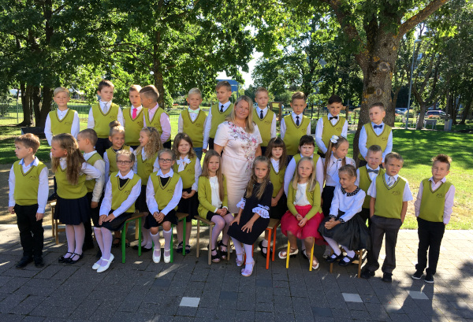

Contents
7th grade initiations! (17.11)
7th grade students were prepared for the seventh grade on this day with various tasks.

November - the month of Latvia's birthday

The works of Darija Šļapakova (3.c), Marta Beitāne (2.c) and Letīcijas Antapsone (2c) have been used (see Inta Veinšteina).
The most beautiful song for Latvia on its 102nd birthday
2nd and 3rd grade students together with teacher Gita Kalniņš learned and sang the most beautiful Latvian folk song
"Woe to me, great sorrow".

The Latvian folk song has strength, joy of life and happiness, which is like a value and wealth to our Latvian people,
so that it sounds like a gift on a birthday!
Happy birthday, Latvia!
The most active students in Latvia on the 102nd birthday
Every year, as the national holiday approaches, students in grades 5-12 are identified as students who show initiative and a positive attitude towards
public work on a daily basis. The idea of teacher Brigita Mežgale-Turlaja has become a beautiful school tradition.

The work of Jānis Babra (2a) has been used (see Inta Veinšteina).
Competition "My address as President on Latvia's birthday"
Every year, the students of Salaspils Secondary School No. 1 take an active part in various competitions.
The President's speech competition is no exception.
This year, on the topic "What does freedom and democracy mean to me?" Daniela Vanceviča from the 12th grade and Elizabete Krasna from the 6th grade participated.

We are glad that both girls are the winners of this competition. On November 8, they had a fantastic opportunity to visit Riga Castle, take part in the filming of the LTV gala concert and shake hands with the President of Latvia Egils Levits. The gala concert in honor of Latvia's 102nd birthday with the performance of our great girls will be available on the evening of November 18 on the LTV1 channel. Learn more!
Thinking about our values - nature, places and people, every week there will be an opportunity to repeat and learn
something new in the material created by our graduate Nick Stafeck. Celebrate the holidays!
International Team Maths Competition (Baltic Way 2020) is over
In Latvia, as we have already informed, the team included 11th grade student Artis Vijups. In the competition of teams of mathematicians from 10 countries, Latvia won a split 4-5. place with Finland. More information VISCHomepage.
HERE competition results.
November 11 - Lāčplēsis Day
We invite everyone to light a candle in their home to honor those who fell in the Latvian Freedom Fights.
President of Latvia Egils Levitagreeting on Lāčplēsis Day.
School Career Week (October 26-30)

Artis will represent Latvia at the Mathematics Olympiad "Baltic Way"
On October 17 and 18, a selection took place for the mathematics team Olympiad "Baltic Way". A Latvian team was formed, which includes 11th grade student Artis Vijups. Results of the selection round participantshere.
There is a digital geography atlas for primary schools , in the approbation of which our geography teacher Brigita Mežgale-
Turlaja with 7th-9th grade students participates.more
Study History 6c (October 15)
Class 6c went on a study tour to Riga on October 14.
Arriving at the VEF Culture Palace, we were greeted by the museum manager Dace and guide Mark. Since it was not possible to understand when it would start raining, after disinfecting
hands, we went to the territory of the former VEF factory. According to the guide, the children had to look for VEF buildings,
take photos with them. Returning to the VEF Culture Palace, we got a comprehensive account of the castle's renovation works, tried out the light effects in the lobby, and found out where the president is sitting in the hall when he arrives for a concert at the castle. We also learned a lot about what VEF produced, how to send telegrams, how to make a landline call, looked at different types of ancient radio, and, of course, saw a VEF Minox camera made in Latvia. Each was given a cardboard radio model that can be created at home.
The second part of the tour was a lesson at the Latvian National Museum of History on the Latvian so-called Prehistoric time. We were able to walk around and see the Stone, Bronze and Iron Age exhibits (the ABCs of history), as well as complete the task of assembling various objects in the ABC time zone.
"Many thanks to the parents of 6th grade for their support! During the tour we often disinfected our hands and used protective masks. It was very valuable to learn something new and interesting, to strengthen new knowledge in Latvian history and to think about the culture of behavior in the museum, both to enjoy time with classmates outside of school, "sums up the day spent by class teacher Gunta Lagzdiņa.
Atvērt pakalpojumā Google tulkotājs
Atsauksmes
School Speech Contest for 4th - 6th Grade Students (October 15)
On October 9, the school round of the 4th - 6th grade speech competition took place. This time, none of the 25 poems were repeated,
the students also told in a few sentences about the chosen poet. The most popular authors of young people's choice are M.Cielēna, P.Brūveris,
I.Zandere, O.Vācietis, L.Briedis, I.Ziedonis and others. The most surprising, however, was the discovery of young poets - students who performed
self-written poems. And the most interesting is how they were made - watching the clouds… In a Latvian language lesson, the students watched the clouds outside, everyone saw something in them and then created a poem. When asked if it "came" hard for young poets, the answers were
varied. It is to be hoped that we will soon be able to read a selection of poetry from Salaspils Secondary School No. 1.
The best in the 4th grade group - Mārtiņš Razgals (1st place), Tomass Sperga (2nd place), Edvarts Slūka (3rd place).
Best in 5th grade group - Katrīna Kravčuka (1st place), Kate Circāne (2nd place), Alise Agnese Megne (3rd place).
Best in 6th grade group - Richard Kokins (1st place), Greta Girgensone (2nd place), Beatrice Masteiko (3rd place).
The best selection in photography…
Many thanks to the participants, their parents and teachers of Latvian language and literature Marta Spruženiece, Jana Bistere,
Ramin Skuja and Jolanta Strautiņa, Deputy Director Ineta Nekraša.
Grade 2e Responds to Pet Calling (October 12)
Grade 2e responded to the Riga Zoo's invitation to read acorns, as they will be great for zoo residents.

We're in Sports Relay (October 10)
On October 10, within the framework of the Salaspils half marathon "Catch the wind", the delayed 4 x 5 km relay race of the Olympic Day 2020 "We are in sports" took place, in which two teams of Salaspils 1st secondary school participated. The 10th grade team was represented by E.Petrovska, A.Cunska,
T.Kramarovs (10.a) and O.Deņisenoks (10.b), A.Stroža, K.Brunovska started in the combined 11th and 12th grade team (11.b)
and T.Dejus (12.b), who performed 2 x 5 km !.

"Thank you young people for starting and their parents for their support!" says sports teacher Valda Kublicka.
Good Work Week 2020 (October 8)
The charity organization Palīdzēsim.lv has been organizing the campaign “Good Works Week” for the twelfth year in a row, when increased attention is paid to assistance, the provision of which does not require a large financial investment.
5th grade students of Salaspils Secondary School No. 1 are also participating in this campaign for the second year together with their parents, but for educator Dace
Kontrimiene this is the fifth year when gifts are given to lonely people in Salaspils in the first weeks of October.
Thanks to the employees of the Salaspils social service, the groomed gifts reach the recipients.

Children and their parents always respond to the call, so it is good to realize that helping, delighting, and making gifts is a joy for young and old alike.
Why do children participate in Good Work Week?
Dita: Help others and others will help you!
Kate: Maybe we'll be lonely someday and such gifts will make us happy!
Eliza: No matter what gift, it's important to bring joy.
The children emphasized that charity as a form of assistance is important and necessary, it creates pleasant emotions for both recipients and donors. It is nice to realize that we are able to create a surprise for our fellow human beings, our countrymen.
Educator Dace: Doing good deeds, participating in charity events is a great way to inform and educate both yourself and your loved ones on various issues that we do not talk about enough on a daily basis. It makes you think about various social
injustices and natural disasters, about other people who are not as lucky as us, about old age, about their loved ones, about the fact that an ordinary call can change lives ...
Working together can do more good work!
For the second year in a row (October 5)
we have the green flag of the ECO school.

Thanks to the coordinating teacher Anna Romanova and her active students!
Essay Contest Winners Meet with Prime Minister (September 29)
Thanks to the initiative of the movement "Democracy" and Arvīds Dravnieks, Director of the Institute of Public Law, on September 29
President Krišjānis Kariņš met with the winners of the democracy week essay competition, schoolgirls of our school - Ieva Rūtiņš-
Rūtenbergs, Daila Bluķis and history and philosophy teacher Daina Tauriņš.
Photo: State Chancellery
International Math Olympiad Ends (September 29)
Latvia was represented at the Olympics by 6 students, among them our Artis Vijups, a 11b class student. All Latvian participants won
recognition. Congratulations to Artis with great success!
More information HERE.
Results.
Forest in a Toy Box (September 23)
On September 23, Ilze Zepa and Baiba Krivmane visited the 1st grades with the activity “Forest in a toy box”, which took place at LVMI Silava
organized within the framework of the event “Forest Science Afternoon”.
Children during the event:
- found out who is and lives in the forest,
- listened to the fairy tale "Rainwood and place tree",
- after listening to the fairy tale, tried to find out what wooden things can be found in the classroom,
- got acquainted with the growth and use of trees,
- made a piece of work - each with its own tree, using recycled paper
Science teachers visit SIA "Salaspils Siltums" (September 21)
On September 21, SIA “Salaspils Siltums” invited teachers of natural sciences to visit with a specific goal: to introduce
PILOT PROJECT of a practical approach to the learning process, which includes the exchange of ideas, the development of methodological materials, and
creation of practical workshops for students 1.5 h. There are ideas and there is a mutual professional interest in building cooperation based on
implementation of a competence-based learning process.
Olympic Day Morning Exercise (September 18)
At 10:00 the whole school exercised
Gymnastics 2nd and 3rd grade with teachers Laura and Cynthia
2020/2021 got started
This year we have 1236, of which 134 are first graders.
Here they are:
1a class with teacher Inga Zīle,
1st grade with teacher Anna Zālīte,
1st grade with teacher Iju Stērniece,
1st grade with teacher Angelika Kirstein,
1st grade with teacher Santa Gereg.
See more.
The graduates of the 12th grade of the previous school year and teacher Brigita Mežgale-Turlaja greet the school staff on the Day of Knowledge.
The school will be photographed at the event for publicity purposes.
September 1 1.-12. grade students enter school without parents.
See the location of the classes on September 1 HERE.
In the ranking of Ata Kronvalds Foundation schools in work with talented students, we are in the 12th place in the group of large schools! See more.
Salaspils region Teacher of the Year 2019/20.m.
We are proud of our math teacher DacE Kontrimieni. We warmly welcome and congratulate you!
About e-class
Applying for a student's absence - methodological material for parents.
VIDEO tutorials (How to join the e-class? Electronic registration in the e-class. E-class Family set)
-
Invitation (bezmaksas komplekts);
- Family set.
Contact your child's teacher to start using the e-class again. The teacher will enter your mobile phone number
and send a password to it in the E-class.